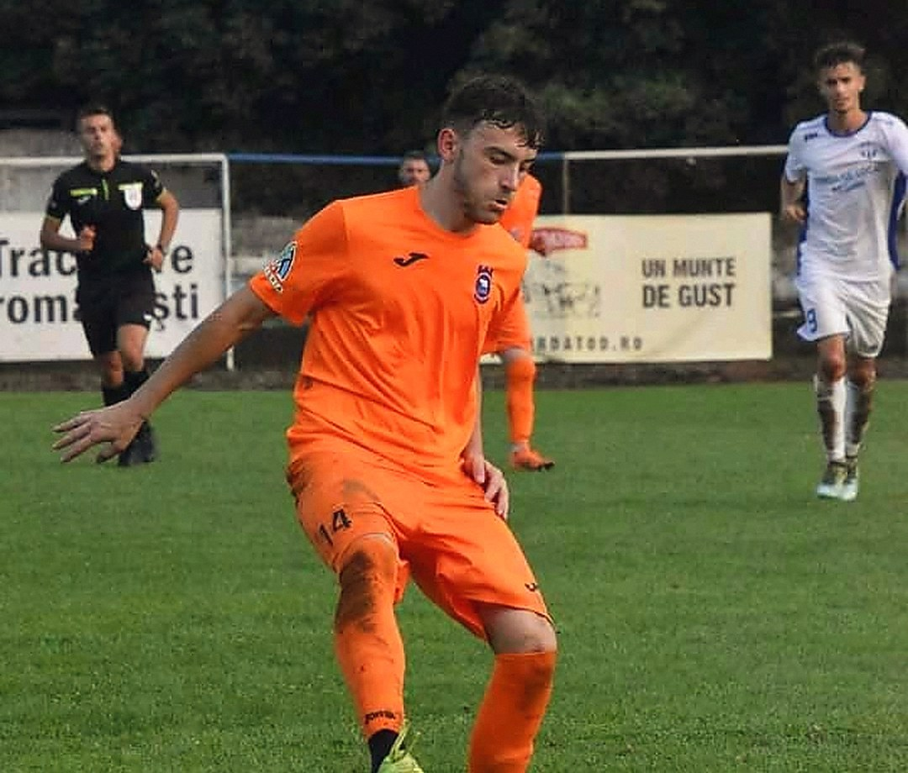

Borlești
Cine îi antrenează
Amihăesei
Teodor
Antrenor Junior Borlești
- Ceahlăul Piatra Neamț
- CSU Alba Iulia
- Șomuz Fălticeni
Licențiat la Universitatea „Vasile Alecsandri” din Bacău, Facultatea de Științe ale Mișcării. Experiența din fotbalul de seniori, tradusă în antrenamente pe înțelesul copiilor.
Fost jucător · Antrenor de juniori
juniorborlesti.ro